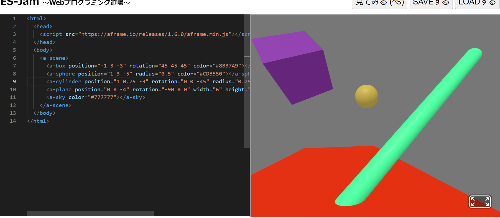
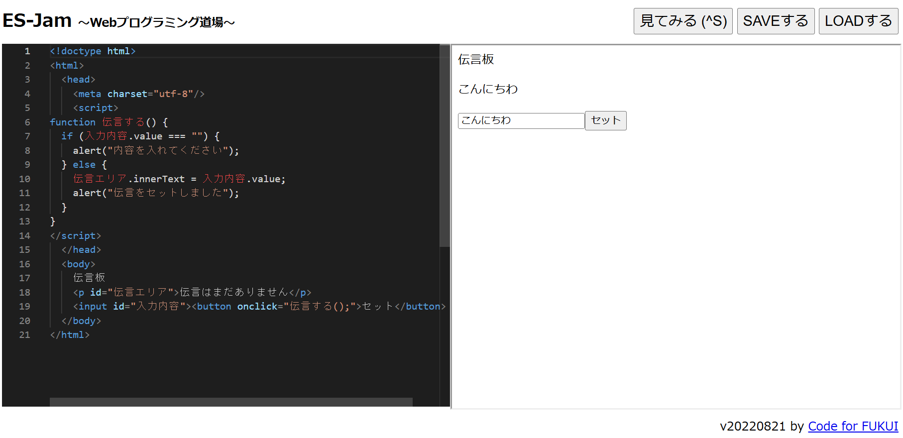

第3週目
3-1 JavaScript体験：VR空間を作る

伝言板
1.内容
直方体、球体、円柱の座標や大きさを好きなように設定してVR空間に表示させた。
2.感想
数値の替え方も簡単でプログラムの仕組みもわかりやすかった。
背景や床も変えられるので、自由度が高いと感じた。
3-2 JavaScript体験：伝言プログラムを作る

伝言板
1.内容
送りたいメッセージを表示するプログラムを設計した。
空白のみでの送信はできないようにした。
2.感想
プログラムを設計する画面で、使用するワードの予測変換をしてくれたので、
書くのがとても楽だった。
3-3 JavaScriptプログラムの３次元空間の体験
1.内容
以前体験した仮想空間の体験のように操作性がよく、空間が見やすかった。
2.感想
ものを生成できるのが興味深かった。体験内ではなかったが他の人と通信できるので、空間内で交流できると思った。